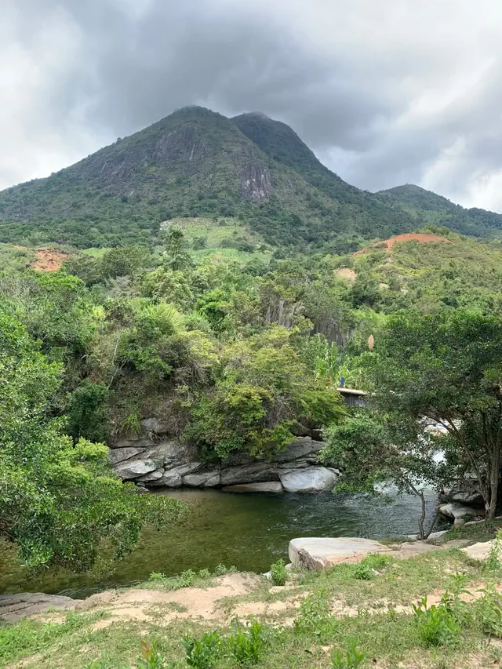
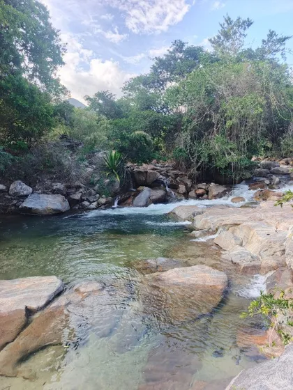
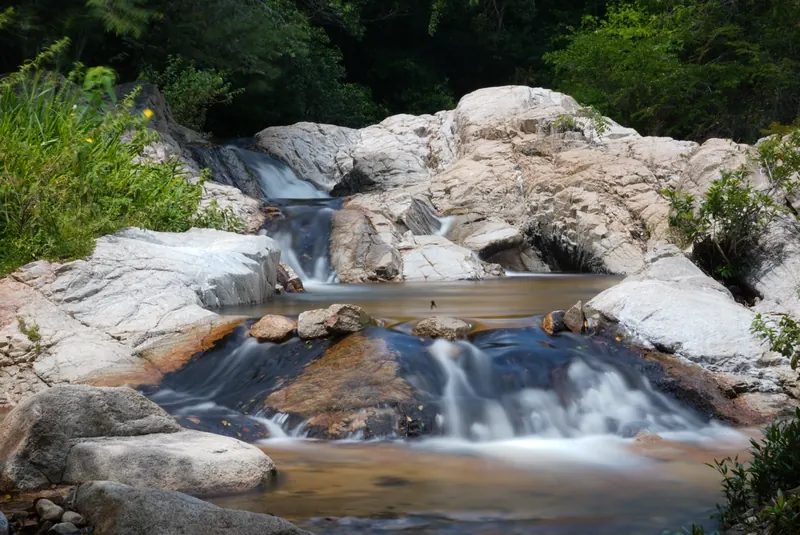
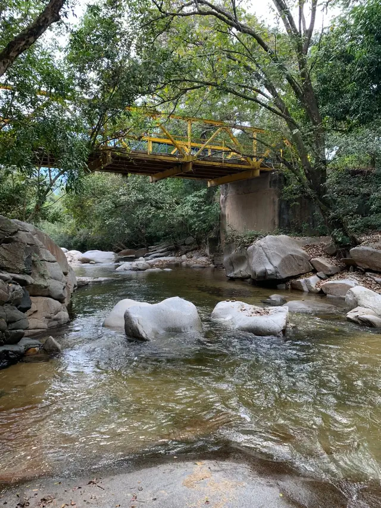
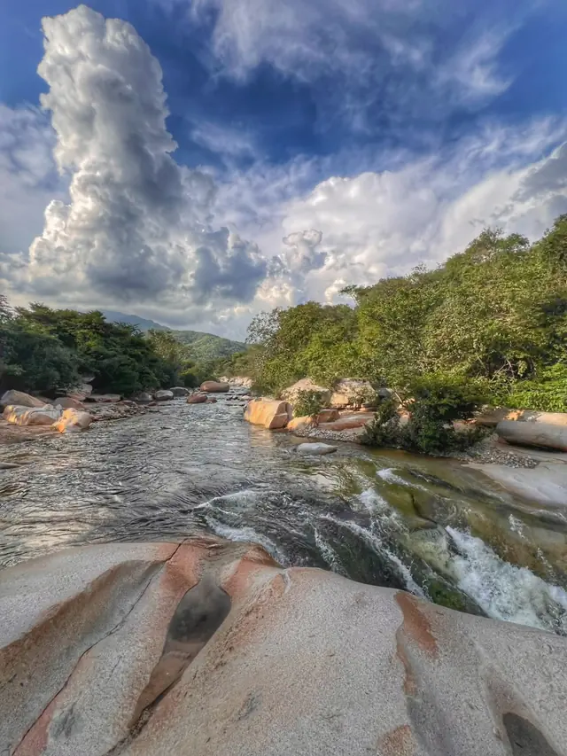
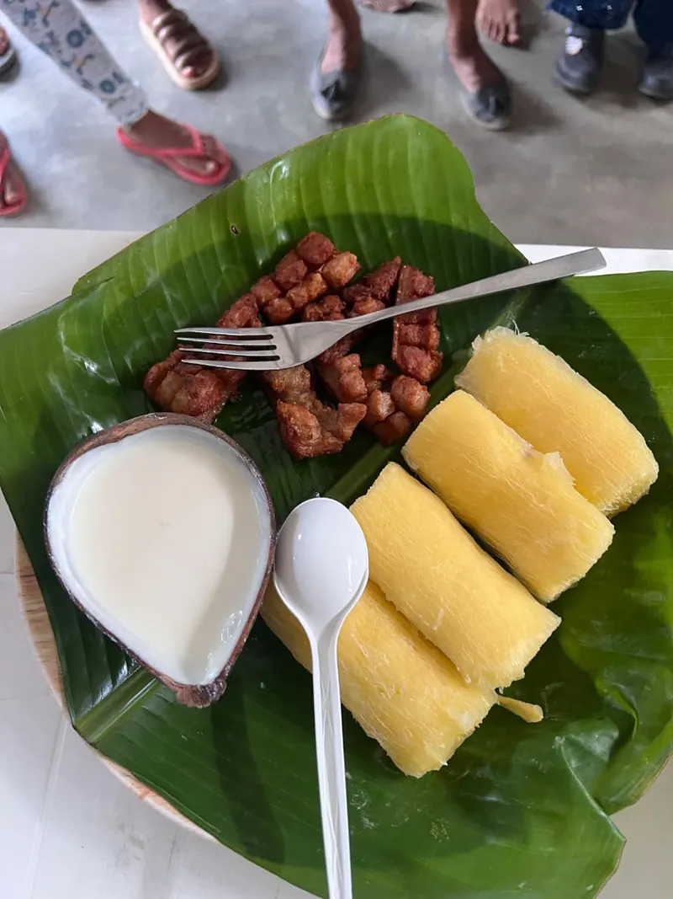
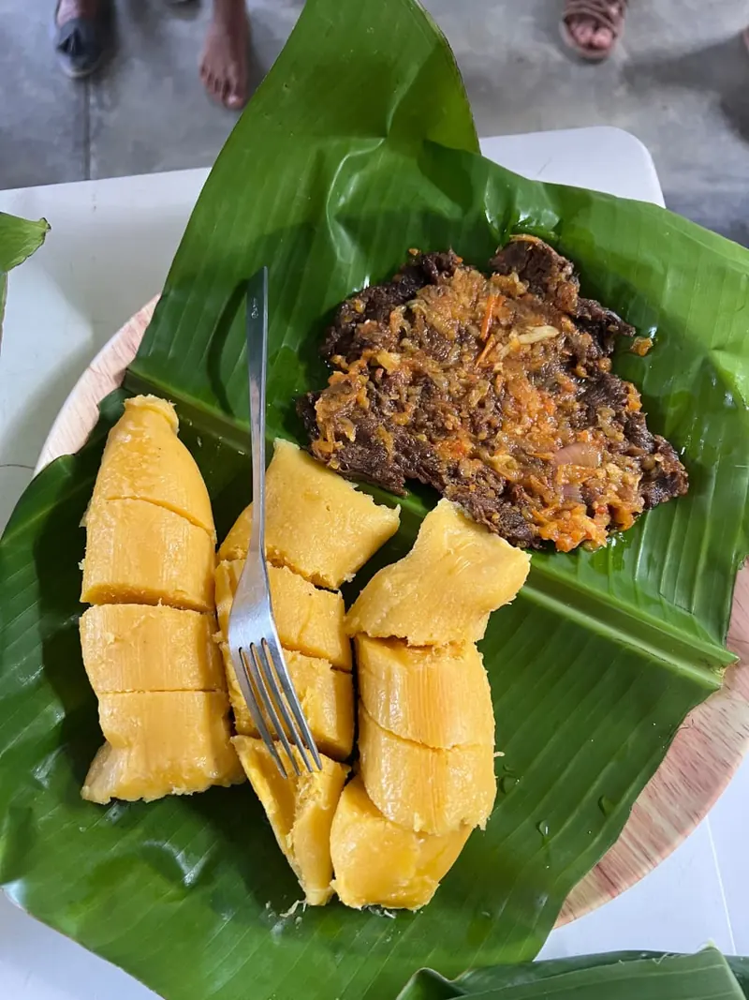
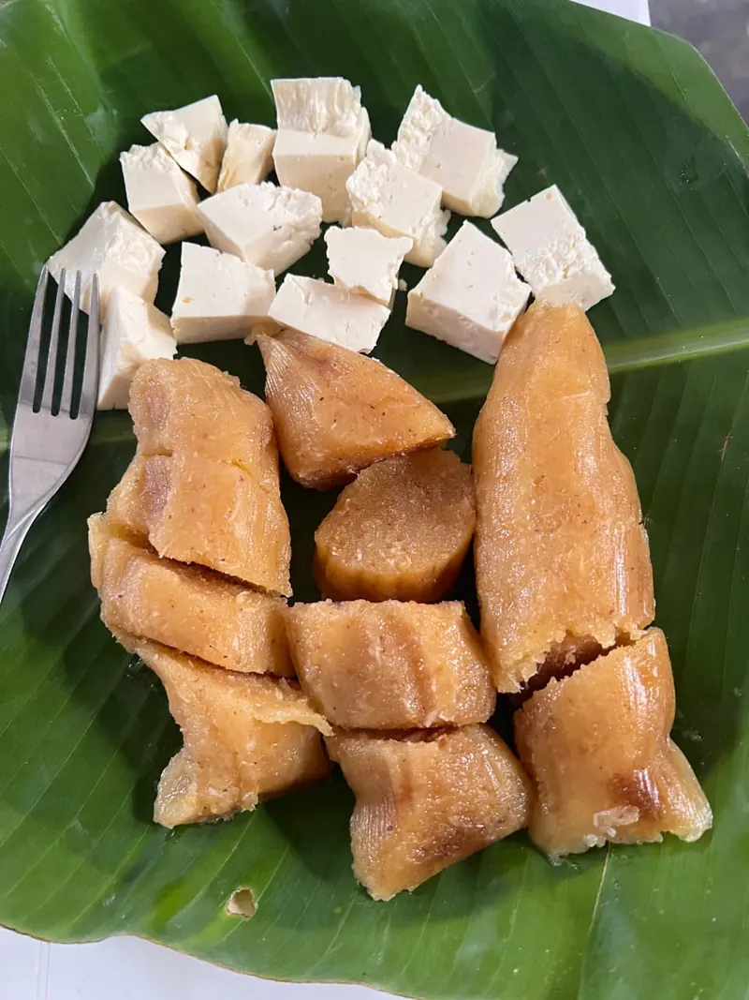
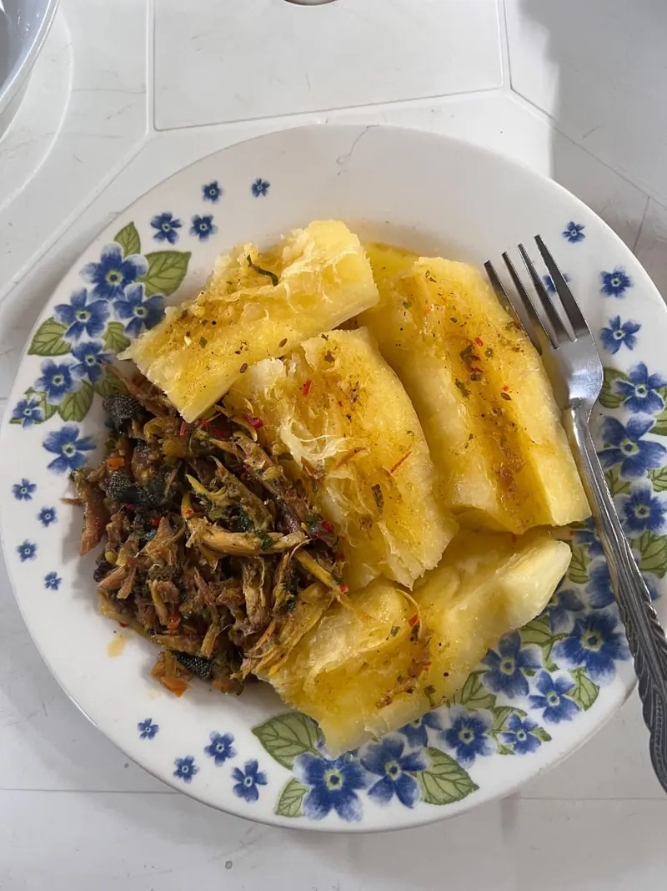

Una mañana
Caminata por Atánquez
Calles empedradas entre dos ríos, el Chiscuinlla y el Candela. Caminamos despacio, probamos la panela atanquera y el pueblo se va contando solo.
Sierra Nevada de Gonawindúa
Seis comunidades, cómo llegar a Atánquez, lo que se vive en un recorrido y los acuerdos para cuidar el territorio.
Atánquez

Guatapurí
Chemesquemena
Pontón
Mojao
La MinaCómo llegar: de Valledupar a Atánquez, unos 50 km por carretera
En el territorio kankuamo, las manos de nuestras abuelas, mayoras y madres guardan el secreto de un sazón inigualable. Son expertas en preparar las comidas tradicionales que han pasado de generación en generación, cocinadas a fuego de fogón y con productos de nuestra tierra.
Cada plato lleva historia, tradición y mucho amor. ¡Quien prueba nuestra comida queda encantado y siempre quiere volver!




La gasa es la correa de la mochila: se teje aparte, con otra puntada, y es la parte que toca el cuerpo — la que la mantiene cerca, al hombro. Un recorrido es igual: no es ver Atánquez desde afuera, es llevarlo puesto — un momento que se queda contigo.
Calles empedradas entre dos ríos, el Chiscuinlla y el Candela. Caminamos despacio, probamos la panela atanquera y el pueblo se va contando solo.

Baja directo de la Sierra, con el agua fría y cristalina. Caminamos su orilla, nos damos un baño y entendemos por qué es un río sagrado.

Nos sentamos a escuchar a los mayores: la cosmovisión, la resistencia y la memoria del pueblo kankuamo, contadas por quien las vivió.

La fiesta grande de mi pueblo: diablos de espejos y campanas, negros del palenque y cucambas danzando en la calle la pelea del bien y el mal.
Un recorrido se cuadra conversando: cuéntame cuándo vienes, cuántos son y qué quieres vivir, y yo armo el camino. También a la medida, para universidades y colectivos.
Más que conocer paisajes, queremos aprender a cuidar la Madre Tierra, respetar el agua y proteger la vida. Por eso cada recorrido se camina con estos acuerdos.
Vas acompañado. Cada recorrido lo guía un anfitrión y conocedor del territorio, con el respaldo y la orientación de los mayores y las autoridades.
Todo se concerta. Las experiencias se acuerdan con los cabildos y autoridades de cada comunidad, respetando sus creencias, sus espacios sagrados y sus orientaciones espirituales.
No todo se fotografía. Hay lugares donde no está permitido tomar fotos ni grabar.